http://www.fwbuilder.org
| Author: vadim@fwbuilder.org http://www.fwbuilder.org |
This article continues the series of articles on Firewall Builder, a graphical firewall configuration and management tool that supports many Open Source firewall platforms as well as Cisco IOS access lists and Cisco ASA (PIX). Firewall Builder was introduced on this site earlier with articles Getting Started With Firewall Builder, Using Firewall Object In Firewall Builder. Firewall Access Policy Rulesets, Part 1. Firewall Access Policy Rulesets, Part 2.
This article continues with examples of Access Policy rules and demonstrates how IPv6 and mixed IPv4+IPv6 configurations can be built.
More information on Firewall Builder, pre-built binary packages and source code, documentation can be found on the project web site at http://www.fwbuilder.org/. Numerous examples of iptables, pf and other rules are available in Firewall Builder Users Guide. Follow Firewall Builder Project Blog for announcements and articles on all aspects of using Firewall Builder.
We start with a firewall object that has some basic IPv4 policy. First, we need to add IPv6 addresses to its interfaces. Open context menu associated with interface object in the tree and click on the item "Add IPv6 address".
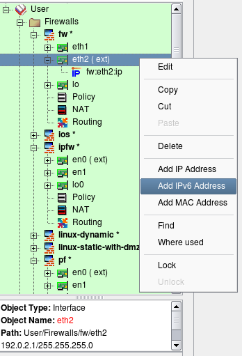Enter the address and netmask length (Use your own address!)
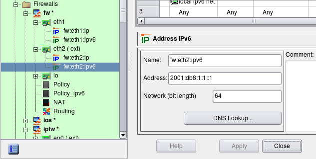Add IPv6 to internal interface
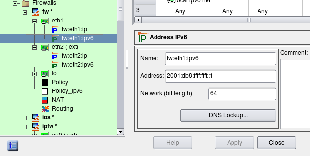We also need to create network object to represent our local IPv6 network. Click New Network IPv6 in the new object menu.
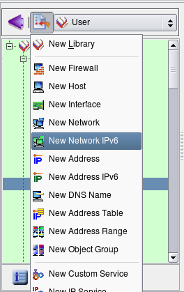Enter the name and address of this network. We are using the link-local address for illustration purposes.
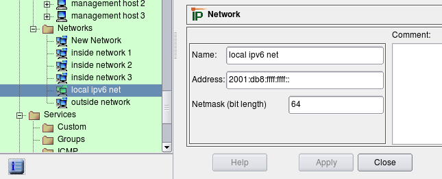Inspect the regular Policy object. To see its parameters, double-click on it in the tree to open it in the editor (see screenshot below). This object has a Name, IPv4/IPv6 setting and a Top ruleset checkbox. For iptables firewalls, there is also a pair of radio buttons that indicates whether the policy should affect filter+mangle tables or just mangle table.
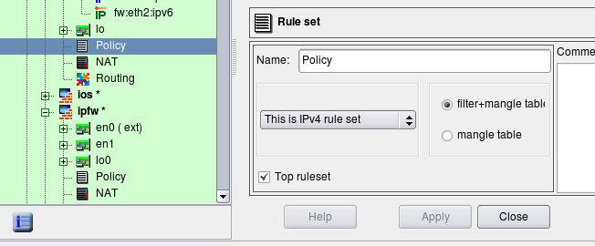The IPv4/IPv6 setting tells the compiler how it should interpret addresses of objects that appear in the rules. Possible configurations are "IPv4 only", "IPv6 only" and "Mixed IPv4 and IPv6":
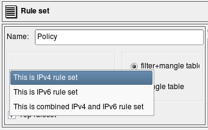"IPv4 only rule set" - Only addressable objects with IPv4 addresses will be used in the rules. If an object with ipv6 address appears in rules, it is ignored. IPv6-only services such as ICMPv6 are also ignored. TCP and UDP services are used since they apply for both IPv4 and IPv6 rules.
"IPv6 only rule set" - The opposite, only objects with ipv6 addresses are used and those with ipv4 addresses are ignored. IPv6-only services such as ICMPv6 are used but IPv4-only services such as ICMP are ignored. TCP and UDP services are used since they apply for both IPv4 and IPv6 rules.
"Mixed IPv4 and IPv6 only rule set" - compiler makes two passes over the same rules, first to produce IPV4 configuration and then to produce IPV6 configuration. On each pass it uses only address objects with addresses matching address family of the pass. This is the best configuration for transitional configurations when IPv6 rules are gradually added to existing IPv4 configuration. Note that if you add IPv6 address to an interface of a firewall or a host object used in the rules, compiler will use IPv4 addresses of the interface on IPv4 pass and new IPv6 address of the same interface on the IPv6 pass. This principle also applies to the mixed groups of addresses and services.
Compilers treat the "top rule set" parameter differently, depending on the firewall platform:
iptables: rules defined in such rule set will go into built-in chains INPUT,OUTPUT,FORWARD etc. Rules defined in rule sets where this checkbox is not checked go into user-defined chain with the name the same as the name of the rule set.
PF: rules defined in the rule set with "top rule set" checkbox turned off go into an anchor with the name of the rule set.
Cisco IOS access lists: if top rule set checkbox is turned off, the rules go into access list with the name prefixed with the name of the rule set; this access list will not be assigned to interfaces via "ip access-group" command. Rulesets with checkbox "top rule set" checked generate ACLs with names consisting of the shortened name of interface and direction abbreviation ("in" or "out"). Only these lists are assigned to interfaces.
To add new policy, right-click on the firewall object in the tree to open the context menu and use menu item Add Policy Rule Set.
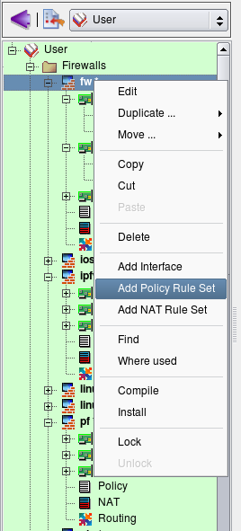Assign a unique name to the new policy object, make it IPv6 and check the top ruleset checkbox, then click Apply.
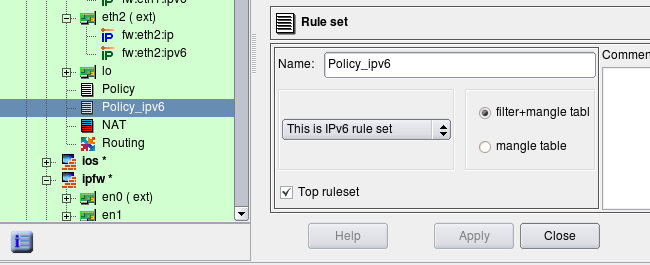Now click on the new policy object in the tree ("Policy_ipv6") and add some rules as usual. Here we have added a rule to permit all on loopback, a rule to permit incoming HTTP and ICMP6 to the firewall and a rule to permit outgoing sessions from the internal network (object "local ipv6 net") and the firewall itself.
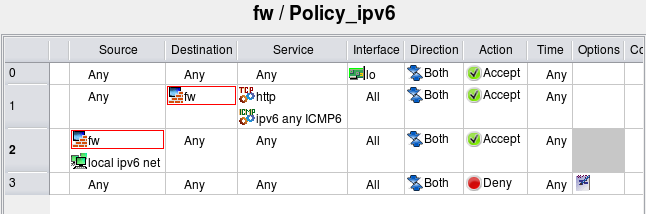Now compile the policy. Note that in the progress output the compiler shows that it first processes IPv4 policy rule set, then compiles IPv6 policy rule set. I still have bunch of rules in the IPv4 policy left from the previous examples but the IPv6 policy is small and only has a few rules as shown on the screenshot above.
$ fwb_ipt -v -f policy_rules.fwb fw *** Loading data ... done Compiling rules for 'nat' table processing 1 rules rule 0 (NAT) Compiling ruleset Policy for 'mangle' table processing 1 rules rule 0 (eth2) Compiling ruleset Policy for 'filter' table processing 17 rules rule 1 (global) rule 2 (global) rule 3 (global) rule 4 (global) rule 5 (global) rule 6 (global) rule 7 (global) rule 8 (global) rule 9 (global) rule 10 (global) rule 11 (eth2) rule 12 (lo) rule 13 (global) rule 14 (global) rule 15 (global) rule 16 (global) rule 17 (global) Compiling ruleset Policy_ipv6 for 'mangle' table, IPv6 Compiling ruleset Policy_ipv6 for 'filter' table, IPv6 processing 4 rules rule Policy_ipv6 1 (global) rule Policy_ipv6 2 (global) rule Policy_ipv6 3 (global) Compiled successfully
Here is a fragment of the generated script. The script uses the ip6tables routine to load rules into the kernel. Option "Assume firewall is part of any" was turned off in this firewall object so the rule #1 generated only iptables commands in the INPUT chain.
# ================ Table 'filter', rule set Policy_ipv6 # Policy compiler errors and warnings: # # Rule Policy_ipv6 0 (lo) # $IP6TABLES -A INPUT -i lo -m state --state NEW -j ACCEPT $IP6TABLES -A OUTPUT -o lo -m state --state NEW -j ACCEPT # # Rule Policy_ipv6 1 (global) # echo "Rule Policy_ipv6 1 (global)" # $IP6TABLES -A INPUT -p tcp -m tcp --dport 80 -m state --state NEW -j ACCEPT $IP6TABLES -A INPUT -p ipv6-icmp -m state --state NEW -j ACCEPT # # Rule Policy_ipv6 2 (global) # echo "Rule Policy_ipv6 2 (global)" # $IP6TABLES -A OUTPUT -m state --state NEW -j ACCEPT $IP6TABLES -A FORWARD -s 2001:db8:ffff:ffff::/64 -m state --state NEW -j ACCEPT # # Rule Policy_ipv6 3 (global) # echo "Rule Policy_ipv6 3 (global)" # $IP6TABLES -N Policy_ipv6_3 $IP6TABLES -A FORWARD -j Policy_ipv6_3 $IP6TABLES -A Policy_ipv6_3 -j LOG --log-level info --log-prefix "RULE 3 -- DENY " $IP6TABLES -A Policy_ipv6_3 -j DROP
Lets try to compile policy rule set configured as mixed IPv4+IPv6. To illustrate, I am using two simple rules.
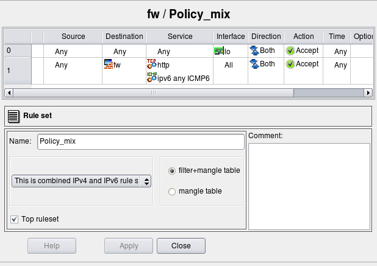Rule #0 permits everything on loopback. Loopback interface of the firewall has two addresses: 127.0.0.1/8 and ::1/128. Rule #1 permits http and any ICMPv6 to the firewall. Here is generated iptables script for these two rules:
# ================ IPv4 # ================ Table 'filter', rule set Policy_mix # Policy compiler errors and warnings: # # Rule Policy_mix 0 (lo) # $IPTABLES -A INPUT -i lo -m state --state NEW -j ACCEPT $IPTABLES -A OUTPUT -o lo -m state --state NEW -j ACCEPT # # Rule Policy_mix 1 (global) # $IPTABLES -A INPUT -p tcp -m tcp --dport 80 -m state --state NEW -j ACCEPT # ================ IPv6 # ================ Table 'filter', rule set Policy_mix # Policy compiler errors and warnings: # # Rule Policy_mix 0 (lo) # $IP6TABLES -A INPUT -i lo -m state --state NEW -j ACCEPT $IP6TABLES -A OUTPUT -o lo -m state --state NEW -j ACCEPT # # Rule Policy_mix 1 (global) # $IP6TABLES -A INPUT -p tcp -m tcp --dport 80 -m state --state NEW -j ACCEPT $IP6TABLES -A INPUT -p ipv6-icmp -m state --state NEW -j ACCEPT
The script has two parts, one for IPv4 and another for IPv6, generated from the same rule set "Policy_mix". The IPv4 part has only IPv4 addresses and services. The rule that permits ICMPv6 to the firewall is missing in this part of the script because ICMPv6 does not match address family. The rule that permits HTTP to the firewall is there though. The second (IPv6) part of the script both permits HTTP and ICMPv6 to the firewall.
Note: the rule that matches on an interface (column "Interface" is not "any") will compile for IPv6 only if this interface has IPv6 address.
If loopback interface of the firewall did not have an address ::1/128, then the IPv6 part of the generated script would not have rules permitting anything on loopback (those with "-i lo" and "-o lo"). This may not be very obvious and may be confusing at first, but this behavior is very useful during transition from purely IPv4 network to a mix of IPv4 and IPv6 when you enable IPv6 only on some interfaces but not others.
Finally, lets look at the generated PF configuration for the same rules in the same mixed policy rule set:
table <tbl.r9999.d> { 192.0.2.1 , 192.168.1.1 }
table <tbl.r1.dx> { 2001:db8:1:1::1 , 2001:db8:ffff:ffff::1 }
# Rule Policy_mix 0 (lo)
#
pass quick on lo inet from any to any keep state
#
# Rule Policy_mix 1 (global)
#
pass in quick inet proto tcp from any to <tbl.r9999.d> port 80 keep state
# Rule Policy_mix 0 (lo)
#
pass quick on lo inet6 from any to any keep state
#
# Rule Policy_mix 1 (global)
#
pass in quick inet6 proto tcp from any to <tbl.r1.dx> port 80 keep state
pass in quick inet6 proto icmp6 from any to <tbl.r1.dx> keep state
Mixed IPv4/IPv6 rule sets can be especially useful in the configuration of the routers access lists and firewall policies where rules can become rather complicated when IPv6 is added to existing IPv4 network. Since most firewalls and routers require different syntax for ipv6 ACL and rules, administrator has to implement second rule set for IPv6, carefully trying to copy existing IPv4 rules to preserve general structure and meaning of the security policy. Things get even more complicated after that because every change in the policy should now be reflected in two sets of ACL or firewall rules. Keeping these synchronized can quickly turn into major task that can significantly elevate probability of human error and network outage. Mixed IPv4+IPv6 rule sets in Firewall Builder help solve this problem.
Lets illustrate this using simplified example of a Cisco router access list configuration that we migrate from IPv4 only to mixed IPv4+IPv6. We start with simple two rules that use only IPv4 address and service objects:
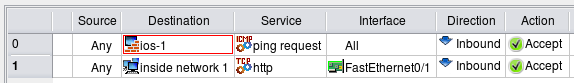In this example router has just two interfaces, FastEthernet0/0 and FastEthernet0/1, both interfaces have only IPv4 addresses when we start. Generated configuration looks like this:
! ================ IPv4 ! Policy compiler errors and warnings: ! no ip access-list extended fe0_0_in no ip access-list extended fe0_1_in ip access-list extended fe0_0_in permit icmp any host 192.0.2.1 8 permit icmp any host 192.168.1.1 8 exit ip access-list extended fe0_1_in permit icmp any host 192.0.2.1 8 permit icmp any host 192.168.1.1 8 permit tcp any 192.168.1.0 0.0.0.255 eq 80 exit interface FastEthernet0/0 ip access-group fe0_0_in in exit interface FastEthernet0/1 ip access-group fe0_1_in in exit
Here rule #0 permits ICMP ping requests to the firewall through all interfaces and rule #1 permits http to internal network through interface FastEthernet0/1 (external), direction inbound. As the result, we get two access lists "fe0_0_in" and "fw0_1_in", one for each interface, that reflect these rules.
Suppose we need to add IPv6 to this network. To do this, I add IPv6 addresses to the interfaces of the router and create network object to describe IPv6 internal network. I then add new IPv6 network object to the rule #1 to permit HTTP to internal net both on IPv4 and IPv6. Rule #0 should also permit ICMPv6 neighbor solicitation and advertisement messages, as well as ICMP v6 ping since it is different from IPv4 ICMP ping. Lets permit any ICMPv6 to the internal network as well. I'll just add IPv6 objects to existing rules, mark rule set as "Mixed IPv4 and IPv6" and let the program sort it out. Here is how updated rules look like:
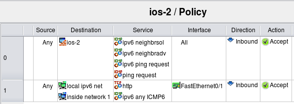Now router has the same two interfaces, FastEthernet0/0 and FastEthernet0/1, but both interfaces have IPv4 and IPv6 addresses. Here is the result:
! ================ IPv4 ! Policy compiler errors and warnings: ! no ip access-list extended fe0_0_in no ip access-list extended fe0_1_in ip access-list extended fe0_0_in permit icmp any host 192.0.2.1 8 permit icmp any host 192.168.1.1 8 exit ip access-list extended fe0_1_in permit icmp any host 192.0.2.1 8 permit icmp any host 192.168.1.1 8 permit tcp any 192.168.1.0 0.0.0.255 eq 80 exit interface FastEthernet0/0 ip access-group fe0_0_in in exit interface FastEthernet0/1 ip access-group fe0_1_in in exit ! ================ IPv6 ! Policy compiler errors and warnings: ! no ipv6 access-list ipv6_fe0_0_in no ipv6 access-list ipv6_fe0_1_in ipv6 access-list ipv6_fe0_0_in permit icmp any host 2001:db8:1:1::1 135 permit icmp any host 2001:db8:1:1::1 136 permit icmp any host 2001:db8:1:1::1 128 permit icmp any host 2001:db8:ffff:ffff::1 135 permit icmp any host 2001:db8:ffff:ffff::1 136 permit icmp any host 2001:db8:ffff:ffff::1 128 exit ipv6 access-list ipv6_fe0_1_in permit icmp any host 2001:db8:1:1::1 135 permit icmp any host 2001:db8:1:1::1 136 permit icmp any host 2001:db8:1:1::1 128 permit icmp any host 2001:db8:ffff:ffff::1 135 permit icmp any host 2001:db8:ffff:ffff::1 136 permit icmp any host 2001:db8:ffff:ffff::1 128 permit tcp any 2001:db8:ffff:ffff::/64 eq 80 permit icmp any 2001:db8:ffff:ffff::/64 exit interface FastEthernet0/0 ipv6 traffic-filter ipv6_fe0_0_in in exit interface FastEthernet0/1 ipv6 traffic-filter ipv6_fe0_1_in in exit
The IPv4 part looks exactly the same as before, but we also have additional IPv6 access lists. For IPv6, rule #1 permits ICMPv6 neighbor solicitation, neighbor advertisement and ipv6 ping request messages to the firewall through all interfaces, direction inbound, and rule #1 permits http and all ICMPv6 to the internal network through FastEthernet0/1, inbound. Generated ipv6 access lists "ipv6_fe0_0_in" and "ipv6_fe0_1_in" reflect this. ACL ipv6_fe0_0_in permits icmp types 128, 135 and 136 to ipv6 addresses that belong to the firewall and ACL ipv6_fe0_1_in permits the same icmp messages to the firewall, plus tcp port 80 and any ipv6 icmp to the internal ipv6 network.
The program automatically separated IPv4 and IPv6 objects and created two sets of access lists to implement policies for both address families. This simplifies adoption of IPv6 into existing network because you don't have to reimplement access lists and firewall rules written for IPv4 again and then maintain two rule sets coordinated as you make changes. Instead, the structure of existing policy rule set is preserved, you just add IPv6 objects to the same rules and the program generates both IPv4 and IPv6 configurations from it.
References: